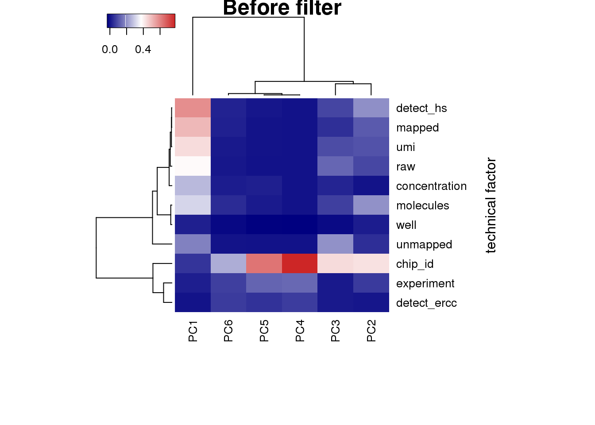
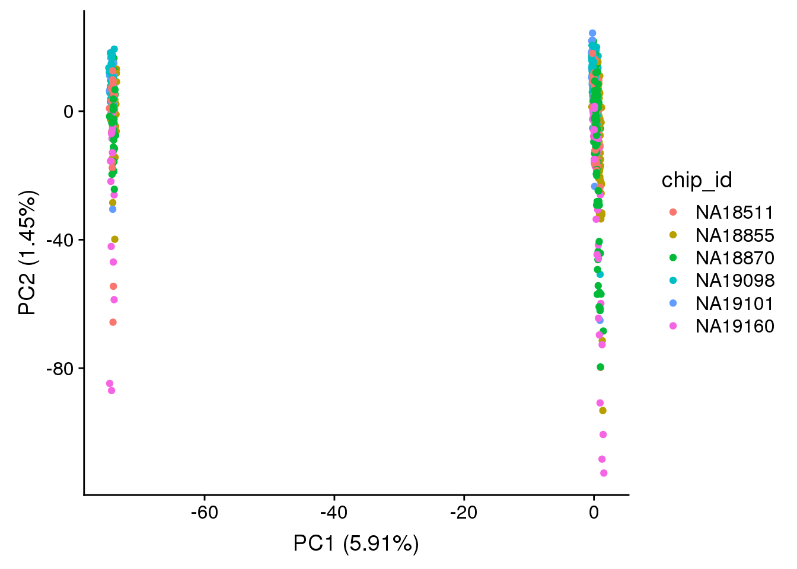
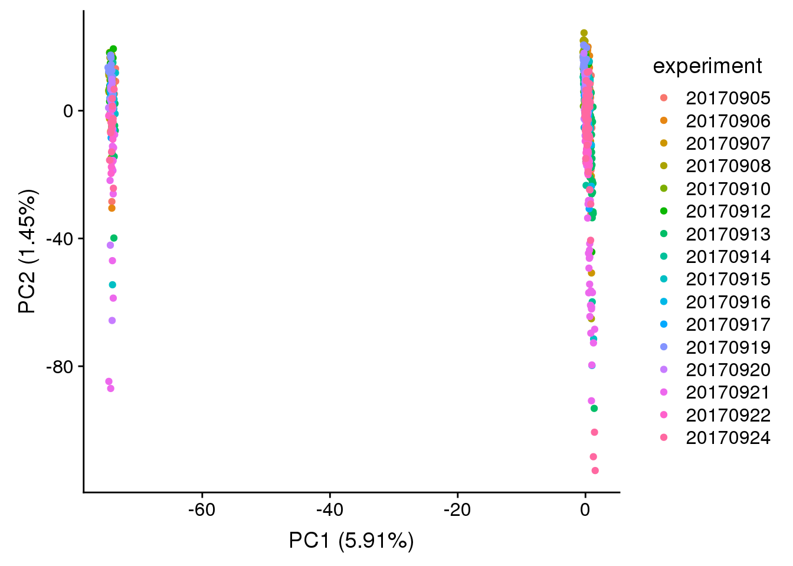
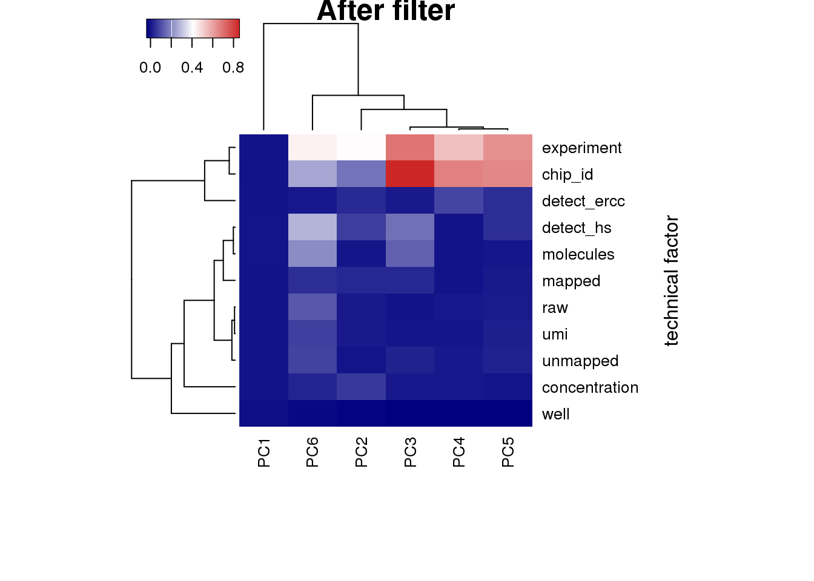
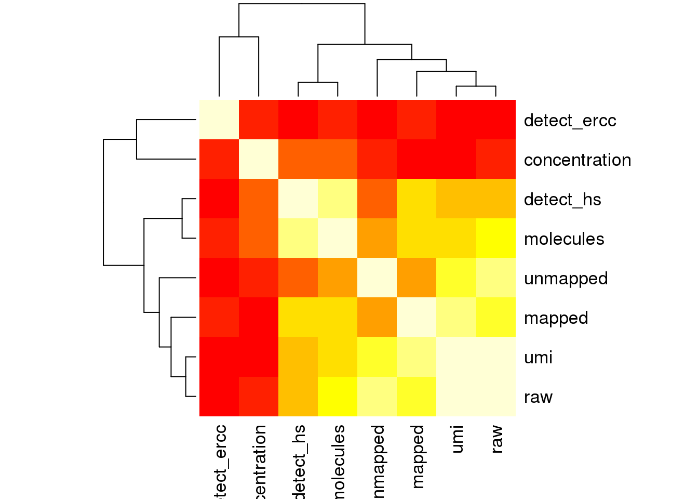
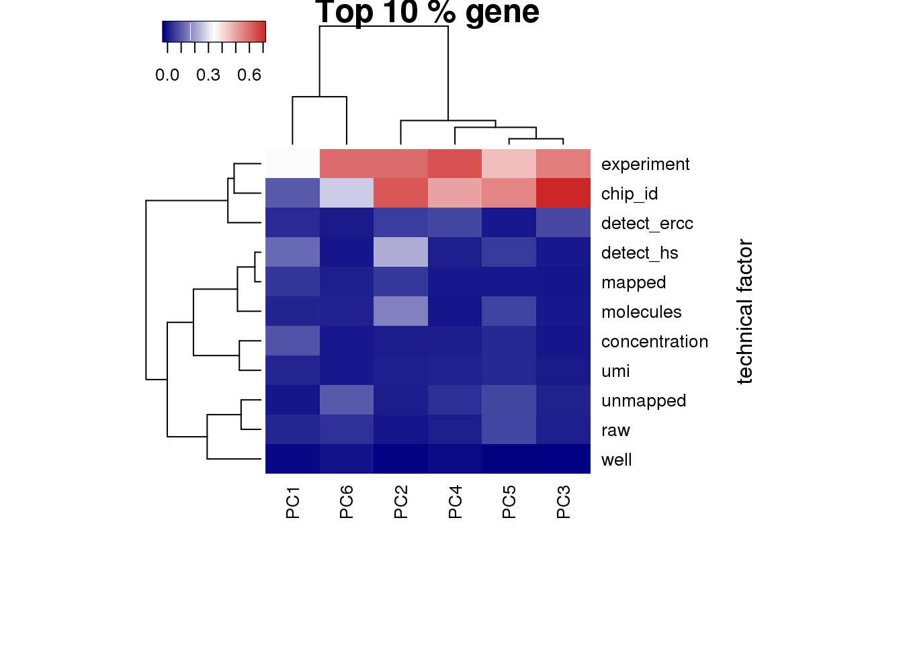

PCA vs Technical Variables
Po-Yuan Tung
2018-01-31
Last updated: 2020-01-23
Checks: 7 0
Knit directory: peco-paper/
This reproducible R Markdown analysis was created with workflowr (version 1.6.0). The Checks tab describes the reproducibility checks that were applied when the results were created. The Past versions tab lists the development history.
Great! Since the R Markdown file has been committed to the Git repository, you know the exact version of the code that produced these results.
Great job! The global environment was empty. Objects defined in the global environment can affect the analysis in your R Markdown file in unknown ways. For reproduciblity it’s best to always run the code in an empty environment.
The command set.seed(20190814) was run prior to running the code in the R Markdown file. Setting a seed ensures that any results that rely on randomness, e.g. subsampling or permutations, are reproducible.
Great job! Recording the operating system, R version, and package versions is critical for reproducibility.
Nice! There were no cached chunks for this analysis, so you can be confident that you successfully produced the results during this run.
Great job! Using relative paths to the files within your workflowr project makes it easier to run your code on other machines.
Great! You are using Git for version control. Tracking code development and connecting the code version to the results is critical for reproducibility. The version displayed above was the version of the Git repository at the time these results were generated.
Note that you need to be careful to ensure that all relevant files for the analysis have been committed to Git prior to generating the results (you can use wflow_publish or wflow_git_commit). workflowr only checks the R Markdown file, but you know if there are other scripts or data files that it depends on. Below is the status of the Git repository when the results were generated:
Ignored files:
Ignored: .Rhistory
Ignored: .Rproj.user/
Untracked files:
Untracked: analysis/npreg_trendfilter_quantile.Rmd
Untracked: code/fig2_rev.R
Untracked: data/fit.quant.rds
Untracked: data/intensity.rds
Untracked: data/log2cpm.quant.rds
Unstaged changes:
Modified: analysis/access_data.Rmd
Modified: analysis/index.Rmd
Modified: code/fig2.R
Note that any generated files, e.g. HTML, png, CSS, etc., are not included in this status report because it is ok for generated content to have uncommitted changes.
These are the previous versions of the R Markdown and HTML files. If you’ve configured a remote Git repository (see ?wflow_git_remote), click on the hyperlinks in the table below to view them.
| File | Version | Author | Date | Message |
|---|---|---|---|---|
| Rmd | 5205df7 | jhsiao999 | 2020-01-23 | move pca_tf.Rmd and change eset to sce |
Setup
library("cowplot")
library("dplyr")
library("edgeR")
library("ggplot2")
library("heatmap3")
library("reshape2")
library("SingleCellExperiment")
source("code/utility.R")PCA
Before fileter
sce_raw <- readRDS("data/sce-raw.rds")
## look at human genes
sce_raw_hs <- sce_raw[rowData(sce_raw)$source == "H. sapiens", ]
head(colData(sce_raw_hs))DataFrame with 6 rows and 44 columns
experiment well cell_number concentration ERCC
<integer> <character> <integer> <numeric> <character>
20170905-A01 20170905 A01 1 1.726404375 50x dilution
20170905-A02 20170905 A02 1 1.445692561 50x dilution
20170905-A03 20170905 A03 1 1.889617025 50x dilution
20170905-A04 20170905 A04 1 0.47537227 50x dilution
20170905-A05 20170905 A05 1 0.559682703 50x dilution
20170905-A06 20170905 A06 1 2.135351839 50x dilution
individual.1 individual.2 image_individual image_label
<character> <character> <character> <integer>
20170905-A01 NA18855 NA18870 18870_18855 3
20170905-A02 NA18855 NA18870 18870_18855 2
20170905-A03 NA18855 NA18870 18870_18855 1
20170905-A04 NA18855 NA18870 18870_18855 49
20170905-A05 NA18855 NA18870 18870_18855 50
20170905-A06 NA18855 NA18870 18870_18855 51
raw umi mapped unmapped reads_ercc reads_hs
<integer> <integer> <integer> <integer> <integer> <integer>
20170905-A01 5746265 3709414 2597589 1111825 161686 2435427
20170905-A02 3997709 2642317 1799823 842494 253670 1545769
20170905-A03 4765829 3301270 2274259 1027011 261145 2011561
20170905-A04 1926305 1286653 806647 480006 247028 559614
20170905-A05 2626155 1740464 1036933 703531 247831 788955
20170905-A06 5249443 3662342 2631138 1031204 210518 2419498
reads_egfp reads_mcherry molecules mol_ercc mol_hs
<integer> <integer> <integer> <integer> <integer>
20170905-A01 475 1 158546 3692 154830
20170905-A02 379 5 88552 3648 84887
20170905-A03 1550 3 107984 3820 104119
20170905-A04 5 0 44772 3505 41262
20170905-A05 145 2 64926 3505 61413
20170905-A06 1118 4 134989 3664 131293
mol_egfp mol_mcherry detect_ercc detect_hs chip_id
<integer> <integer> <numeric> <numeric> <character>
20170905-A01 23 1 41 9018 NA18870
20170905-A02 12 5 45 6848 NA18870
20170905-A03 44 1 44 7228 NA18855
20170905-A04 5 0 43 3653 NA18870
20170905-A05 6 2 44 4704 NA18870
20170905-A06 31 1 43 8198 NA18870
chipmix freemix snps reads avg_dp min_dp
<numeric> <numeric> <integer> <integer> <numeric> <integer>
20170905-A01 0.16693 0.05395 311848 9356 0.03 1
20170905-A02 0.26917 0.13813 311848 4678 0.02 1
20170905-A03 0.36964 0.07778 311848 6201 0.02 1
20170905-A04 0.5132 0.2615 311848 1356 0 1
20170905-A05 0.54431 0.21419 311848 1906 0.01 1
20170905-A06 0.22935 0.08126 311848 7929 0.03 1
snps_w_min valid_id cut_off_reads unmapped_ratios
<integer> <logical> <logical> <numeric>
20170905-A01 3961 TRUE TRUE 0.299730631307263
20170905-A02 2201 TRUE TRUE 0.318846678880694
20170905-A03 2550 TRUE TRUE 0.311095729825188
20170905-A04 857 TRUE FALSE 0.373065620645193
20170905-A05 1139 TRUE FALSE 0.404220368821188
20170905-A06 3190 TRUE TRUE 0.281569553034643
cut_off_unmapped ercc_percentage cut_off_ercc
<logical> <numeric> <logical>
20170905-A01 TRUE 0.0622446430131942 TRUE
20170905-A02 TRUE 0.140941637038753 TRUE
20170905-A03 TRUE 0.114826411591644 TRUE
20170905-A04 TRUE 0.306240524045834 FALSE
20170905-A05 TRUE 0.239003870066822 FALSE
20170905-A06 TRUE 0.0800102465169064 TRUE
cut_off_genes ercc_conversion conversion
<logical> <numeric> <numeric>
20170905-A01 TRUE 0.0228343826923791 0.0635740672990814
20170905-A02 TRUE 0.014380888555998 0.0549157086214046
20170905-A03 TRUE 0.0146278887208256 0.0517602995882302
20170905-A04 FALSE 0.0141886749680198 0.0737329659372353
20170905-A05 FALSE 0.0141427020832745 0.0778409414985646
20170905-A06 TRUE 0.0174046874851557 0.0542645623182991
conversion_outlier molecule_outlier filter_all
<logical> <logical> <logical>
20170905-A01 FALSE FALSE TRUE
20170905-A02 FALSE FALSE TRUE
20170905-A03 FALSE FALSE TRUE
20170905-A04 FALSE FALSE FALSE
20170905-A05 FALSE FALSE FALSE
20170905-A06 FALSE FALSE TRUE## remove genes of all 0s
sce_raw_hs_clean <- sce_raw_hs[rowSums(assay(sce_raw_hs)) != 0, ]
dim(sce_raw_hs_clean)[1] 19348 1536## convert to log2 cpm
mol_raw_hs_cpm <- edgeR::cpm(assay(sce_raw_hs_clean), log = TRUE)
mol_raw_hs_cpm_means <- rowMeans(mol_raw_hs_cpm)
summary(mol_raw_hs_cpm_means) Min. 1st Qu. Median Mean 3rd Qu. Max.
5.412 5.431 5.634 5.987 6.210 13.007 ## keep genes with reasonable expression levels
mol_raw_hs_cpm <- mol_raw_hs_cpm[mol_raw_hs_cpm_means > median(mol_raw_hs_cpm_means), ]
dim(mol_raw_hs_cpm)[1] 9674 1536anno_raw = data.frame(colData(sce_raw))
anno_raw_hs = data.frame(colData(sce_raw_hs))## pca of genes with reasonable expression levels
pca_raw_hs <- run_pca(mol_raw_hs_cpm)
## a function of pca vs technical factors
get_r2 <- function(x, y) {
stopifnot(length(x) == length(y))
model <- lm(y ~ x)
stats <- summary(model)
return(stats$adj.r.squared)
}
## selection of technical factor
covariates <- anno_raw %>% dplyr::select(experiment, well, concentration, raw:unmapped,
starts_with("detect"), chip_id, molecules)
## look at the first 6 PCs
pcs <- pca_raw_hs$PCs[, 1:6]
## generate the data
r2_before <- matrix(NA, nrow = ncol(covariates), ncol = ncol(pcs),
dimnames = list(colnames(covariates), colnames(pcs)))
for (cov in colnames(covariates)) {
for (pc in colnames(pcs)) {
r2_before[cov, pc] <- get_r2(covariates[, cov], pcs[, pc])
}
}
## plot
heatmap3(r2_before, cexRow=1, cexCol=1, margins=c(8,8), scale = "none",
ylab="technical factor", main = "Before filter")
plot_pca(pca_raw_hs$PCs, pcx = 1, pcy = 2, explained = pca_raw_hs$explained,
metadata = anno_raw_hs, color="chip_id")
After filter
sce_filtered = sce_raw[,sce_raw$filter_all == TRUE]Compute log2 CPM based on the library size before filtering.
log2cpm <- edgeR::cpm(assay(sce_filtered), log = TRUE)
dim(log2cpm)[1] 20421 923pca_log2cpm <- run_pca(log2cpm)
anno = data.frame(colData(sce_filtered))
anno$experiment <- as.factor(anno$experiment)
plot_pca(x=pca_log2cpm$PCs, explained=pca_log2cpm$explained,
metadata=anno, color="chip_id")
plot_pca(x=pca_log2cpm$PCs, explained=pca_log2cpm$explained,
metadata=anno, color="experiment")
## selection of technical factor
covariates <- anno %>% dplyr::select(experiment, well, chip_id,
concentration, raw:unmapped,
starts_with("detect"), molecules)
## look at the first 6 PCs
pcs <- pca_log2cpm$PCs[, 1:6]
## generate the data
r2 <- matrix(NA, nrow = ncol(covariates), ncol = ncol(pcs),
dimnames = list(colnames(covariates), colnames(pcs)))
for (cov in colnames(covariates)) {
for (pc in colnames(pcs)) {
r2[cov, pc] <- get_r2(covariates[, cov], pcs[, pc])
}
}
## plot heatmap
heatmap3(r2, cexRow=1, cexCol=1, margins=c(8,8), scale = "none",
ylab="technical factor", main = "After filter")
PC1 correlated with number of genes detected, which is described in Hicks et al 2017
Number of genes detected also highly correlated with sequencing metrics, especially total molecule number per sample.
cor_tech <- cor(as.matrix(covariates[,4:11]),use="pairwise.complete.obs")
heatmap(cor_tech, symm = TRUE)
Look at the top 10% expression genes to see if the correlation of PC1 and number of detected gene would go away. However, the PC1 is still not individual (chip_id).
## look at top 10% of genes
log2cpm_mean <- rowMeans(log2cpm)
summary(log2cpm_mean) Min. 1st Qu. Median Mean 3rd Qu. Max.
5.124 5.138 5.337 5.738 5.982 13.416 log2cpm_top <- log2cpm[rank(log2cpm_mean) / length(log2cpm_mean) > 1 - 0.1, ]
dim(log2cpm_top)[1] 2043 923pca_top <- run_pca(log2cpm_top)
## look at the first 6 PCs
pcs <- pca_top$PCs[, 1:6]
## generate the data
r2_top <- matrix(NA, nrow = ncol(covariates), ncol = ncol(pcs),
dimnames = list(colnames(covariates), colnames(pcs)))
for (cov in colnames(covariates)) {
for (pc in colnames(pcs)) {
r2_top[cov, pc] <- get_r2(covariates[, cov], pcs[, pc])
}
}
## plot heatmap
heatmap3(r2_top, cexRow=1, cexCol=1, margins=c(8,8), scale = "none",
ylab="technical factor", main = "Top 10 % gene")
sessionInfo()R version 3.5.1 (2018-07-02)
Platform: x86_64-pc-linux-gnu (64-bit)
Running under: Scientific Linux 7.4 (Nitrogen)
Matrix products: default
BLAS/LAPACK: /software/openblas-0.2.19-el7-x86_64/lib/libopenblas_haswellp-r0.2.19.so
locale:
[1] LC_CTYPE=en_US.UTF-8 LC_NUMERIC=C
[3] LC_TIME=en_US.UTF-8 LC_COLLATE=en_US.UTF-8
[5] LC_MONETARY=en_US.UTF-8 LC_MESSAGES=en_US.UTF-8
[7] LC_PAPER=en_US.UTF-8 LC_NAME=C
[9] LC_ADDRESS=C LC_TELEPHONE=C
[11] LC_MEASUREMENT=en_US.UTF-8 LC_IDENTIFICATION=C
attached base packages:
[1] parallel stats4 stats graphics grDevices utils datasets
[8] methods base
other attached packages:
[1] testit_0.9 SingleCellExperiment_1.4.1
[3] SummarizedExperiment_1.12.0 DelayedArray_0.8.0
[5] BiocParallel_1.16.0 matrixStats_0.55.0
[7] Biobase_2.42.0 GenomicRanges_1.34.0
[9] GenomeInfoDb_1.18.1 IRanges_2.16.0
[11] S4Vectors_0.20.1 BiocGenerics_0.28.0
[13] reshape2_1.4.3 heatmap3_1.1.6
[15] edgeR_3.24.0 limma_3.38.3
[17] dplyr_0.8.0.1 cowplot_0.9.4
[19] ggplot2_3.2.1
loaded via a namespace (and not attached):
[1] fastcluster_1.1.25 tidyselect_0.2.5 locfit_1.5-9.1
[4] purrr_0.3.2 lattice_0.20-38 colorspace_1.3-2
[7] htmltools_0.3.6 yaml_2.2.0 rlang_0.4.0
[10] later_0.7.5 pillar_1.3.1 glue_1.3.0
[13] withr_2.1.2 GenomeInfoDbData_1.2.0 plyr_1.8.4
[16] stringr_1.3.1 zlibbioc_1.28.0 munsell_0.5.0
[19] gtable_0.2.0 workflowr_1.6.0 evaluate_0.12
[22] labeling_0.3 knitr_1.20 httpuv_1.4.5
[25] Rcpp_1.0.3 promises_1.0.1 scales_1.0.0
[28] backports_1.1.2 XVector_0.22.0 fs_1.3.1
[31] digest_0.6.20 stringi_1.2.4 grid_3.5.1
[34] rprojroot_1.3-2 tools_3.5.1 bitops_1.0-6
[37] magrittr_1.5 lazyeval_0.2.1 RCurl_1.95-4.11
[40] tibble_2.1.1 crayon_1.3.4 whisker_0.3-2
[43] pkgconfig_2.0.3 Matrix_1.2-17 assertthat_0.2.1
[46] rmarkdown_1.10 R6_2.4.0 git2r_0.26.1
[49] compiler_3.5.1